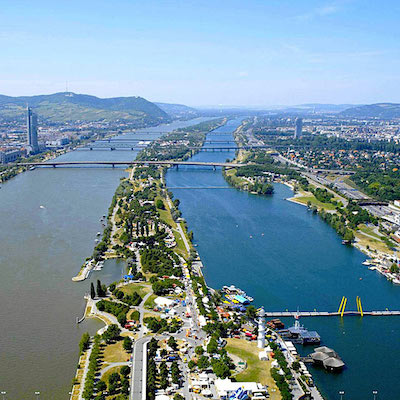

When I was 19 I spent my first summer break from college studying abroad in Vienna, Austria. I was learning German.
The professor leading the trip loved opera and we spent hours waiting in line outside the operahouse to get really cheap tickets, 'Stehplätze', standing up high in the back.
We purchased tickets for unlimited public transportation. I had the best time exploring the city, hopping on and off trams, trains, and busses just to look around the 23 districts of Vienna. At over 1.5 million inhabitants, it was the biggest city I had ever been in, but I felt completely safe.
The international school we attended was downtown in the first district, right across from the state operahouse. We took a class on Austrian history and had some field trips to a few really neat areas of the country. We lived with host families in different districts and I traveled an hour each way to and from school on public transportation.
We had lots of public holidays to take off. Some of us took side trips to places like Hungary, Czech Republic, and Poland.
I hope to go back someday with my oldest daughter, Vienna. Here are some of my favorite memories.
Places to see in Vienna:
Stefansdom
Prater Park with Ferris Wheel
Belvedere Museum, palace, gardens
Schönbrunn palace
Karlkirche - baroque church
Donau Insel - Danube Island recreational area
Sachertorte

Wienerschnitzel
:max_bytes(150000):strip_icc():format(webp)/Wiener-Schnitzel-Vienna-Brandon-Rosenblum-MomentOpen-Getty-5abf358ac5542e00375a594a.jpg)
Apfelstrudel
Eis
Döner Kebab
Naschmarkt - open air food market
Traditional Clothing:
The iconic traditional clothing for men in Austria would be Lederhosen, short leather pants with suspenders
The traditional dress for a woman is a Dirndl, a laced up dress with a blouse underneath
Loden
traditional warm winter jackets made of felted 100% woven wool fabric. It is thick, soft, natural, and waterproof.
History of Vienna
Human occupation around Vienna dates back to the stone age. The Romans occupied the celtic town of Vindobona, where they fought off germanic tribes.
During the Renaissance, Vienna was a center for fine art and science. It still carries this legacy today, and is well-known for composers such as Mozart, Beethoven, and Strauss, as well as great thinkers such as Freud. click for Wikipedia History of Vienna
Gustav Klimt's The Kiss
One of Austria's most famous artists. He painted simple subjects but with elaborate detailed decorative designs and colors
Vienna Travel Video
Vienna Boys Choir
is one of the best known boys' choirs in the world. There are 100 boys, all sopranos and altos. click to learn more